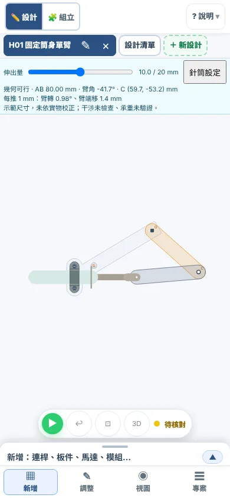
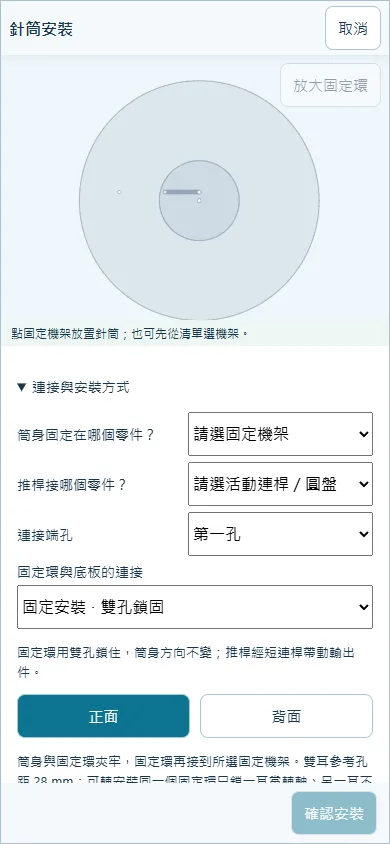
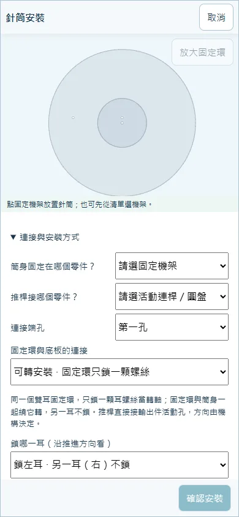
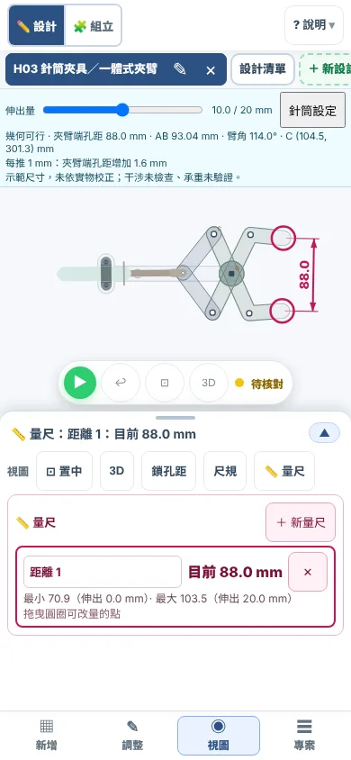

專題單元・獨立學習，不必先完成第一～十二單元
針筒怎麼控制機構？
針筒推出去、拉回來，只做一件事：沿直線動。這個單元先用知識弄懂「直線怎麼變成轉動」，再用電腦模擬一步一步驗證。
- 一、先學知識
針筒、液體、力臂、安裝方式。只用紙和筆。 - 二、再用模擬
六步由淺入深，每一步都能單獨開始。 - 三、檢核
五題小測驗，加一支 MP4 與一段說明。
先說清楚：橘底的數字（例如 16.8°）不是課本打的，是這個工具用範例檔現場算出來的幾何結果；打開網頁後會重算一次。工具不模擬水量、力與摩擦，所有尺寸都是示範尺寸、未實測。學完整個單元，建議先把「限制說明」讀一遍。
第一部分・不用電腦
一、先學知識：五件事
1．針筒是「直線推拉」的動力
針筒有兩個部分：筒身固定不動，推桿會伸出、縮回。推桿走的是一條直線，所以針筒就是一個「直線動力」。馬達讓東西轉，針筒讓東西直線推拉。
| 名詞 | 意思 | 本單元怎麼用 |
|---|---|---|
| 行程 | 推桿最多能走的距離 | 模擬用 0～20 mm 的教學區間，不是整支針筒的全長 |
| 伸出量 | 推桿現在伸出多少（0 到行程） | 工具裡拖「伸出量」滑桿，就是在推針筒 |
| 10 mL | 筒內能裝的水量，是體積，不是長度 | 體積＝截面積×推桿走的距離，所以同樣 10 mL 的針筒，走的距離可以不同 |
| 管夾 | 把筒身夾住、鎖在機架上的零件 | 夾筒身、不夾推桿；筒身不動，推桿才有東西可以「頂」 |
舉例：10 mL 針筒內徑約 14.5 mm（示意值，未實測），截面積約 165 mm²。推桿走 60 mm 才裝滿 10 mL；模擬只用其中 20 mm，約 3.3 mL 的水。
2．液體不能壓縮：帕斯卡原理與主動／從動針筒
空氣可以壓縮，水幾乎不能壓縮。用手指堵住空針筒的前端再推，推桿會被推進去一段；換成裝滿水就推不動。所以水被推走多少體積，另一端就收到多少體積。
帕斯卡原理：密閉的液體，某一處被施加的壓力，會同樣大小傳到液體各處。
用水管把兩支針筒接起來：你推的叫主動針筒，被水推著做事的叫從動針筒。
粗細不同時：面積比決定力與行程的交換
- 水量一樣：主動送出的體積＝從動收到的體積。體積＝面積×距離，所以 面積大的那邊，走的距離比較短。
- 壓力一樣：壓力＝力÷面積，所以 面積大的那邊，力比較大。
- 走得少、力變大；走得多、力變小。力和行程互相交換，理想時乘起來不變（沒有摩擦、沒有漏水、沒有氣泡）。
算算看：主動針筒 5 mL，內徑約 12 mm；從動針筒 10 mL，內徑約 14.5 mm（都是示意值，未實測）。面積＝3.14×（內徑÷2）²。
- 主動面積約 113 mm²，從動面積約 165 mm²。面積比（從動÷主動）約 1.46 倍。
- 主動推 10 mm，送出約 113×10＝1130 mm³ 的水。
- 從動面積 165 mm²，所以走 1130÷165≈6.8 mm。
- 力變成約 1.46 倍（約 1.5 倍）。
再算一題：兩支對調（主動 10 mL、從動 5 mL）
推 10 mm，從動走 10×165÷113≈14.6 mm（變多），力變成 113÷165≈0.68 倍（變小）。用粗的推細的，走得遠但力量變小。
這個工具怎麼處理？模擬直接把「從動針筒的伸出量」當輸入，沒有模擬主動針筒、水管與水量。你在工具裡拖的伸出量，就是機構上那支從動針筒走的距離；想知道主動針筒要推多少，要自己用面積比換算。
3．推比拉可靠：拉的時候容易吸進氣泡
- 推：水被推著走，接頭被壓得更緊，比較不會漏、不會進氣。
- 拉：筒內壓力變低，接頭縫隙容易把空氣吸進去。氣泡可以壓縮，機構就會「軟」，動作不準。
- 做法：重要的動作盡量用「推」；裝水時針筒頭朝上、輕敲、把氣泡擠出來再接管。
4．直線變轉動：曲柄滑塊反過來用
在第三單元的曲柄滑塊，馬達轉曲柄，經連桿推動滑塊直線往復：轉動 → 直線。針筒正好反過來：推桿（像滑塊）直線推，經連桿帶動臂轉動：直線 → 轉動。零件相同，輸入與輸出對調。
力臂：決定每推 1 mm 轉多少
力臂＝支點（臂的轉軸）到「推力方向線」的垂直距離。推力方向線就是連桿所在的那條直線，把它延長，再從轉軸畫一條垂直線過去，這段長度就是力臂。
- 力臂愈長，推桿推同樣的距離，臂轉的角度愈小，但臂上的轉動力愈大。力臂愈短，轉得愈多、愈快，轉動力愈小。
- 估算法：連桿方向跟推桿方向差不多時，每推 1 mm 臂約轉 57.3÷力臂（度）。
用 H07 驗算：推桿在 10 mm 時，力臂約 16.0 mm，所以估算每推 1 mm 約轉 57.3÷16.0＝3.58°。模擬實際算出 3.58°，幾乎一樣。H01 的力臂約 65.5 mm，估算約 0.88°，模擬是 0.85°。
力臂會隨姿勢改變：H07 推桿在 0 mm 時力臂約 11.8 mm，在 10 mm 時約 16.0 mm，所以每推 1 mm 的轉角也跟著變（4.79°→3.58°）。
死點與折返
- 死點：連桿與臂排成一直線，推力線穿過轉軸，力臂＝0。這時推再用力，臂也不會轉，機構會卡住，或不知道往哪一邊轉。曲柄滑塊的曲柄在最前、最後的位置，就是死點。
- 折返：連桿跟推桿接近垂直時，推 1 mm 臂幾乎不動，繼續推，臂反而往回轉。這時「每推 1 mm」的讀數會接近 0。步驟 2 的 H02 就會遇到。
- 怎麼辦：縮短行程避開它，或換孔位、改連桿長度。「每推 1 mm」讀數接近 0，就是警訊。
想知道為什麼是 1÷力臂？（高中延伸）
推桿推 1 mm，連桿在它自己的方向上也前進約 1 mm。連桿接到臂上那一點，繞轉軸轉動時，沿連桿方向的速度分量是「角速度×力臂」。所以角速度＝推桿速度×cosφ÷力臂（φ 是連桿與推桿的夾角）。φ 接近 0 時 cosφ≈1，就得到 1÷力臂（單位是弧度，乘 57.3 變成度）。φ 接近 90° 時 cosφ≈0，就是折返。H02 在 10 mm 時，遠孔 cosφ≈0.94、近孔只有 0.17。
5．兩種安裝方式：固定與可轉
針筒用「固定環」夾住筒身，再鎖到底板上。鎖法有兩種：
| 固定（雙孔） | 可轉（只鎖一顆螺絲） | |
|---|---|---|
| 鎖法 | 同一個固定環，兩個孔都鎖（孔距參考 28 mm） | 同一個固定環，只鎖其中一耳的一顆螺絲；那顆螺絲就是轉軸，離筒身中心線 14 mm，另一耳不鎖、底板只開一個孔 |
| 筒身方向 | 不變 | 跟著輸出擺動 |
| 推桿怎麼接 | 接短連桿，再由連桿推臂或圓盤 | 直接接臂或圓盤的活動孔，不用短連桿 |
| 範例 | H01、H02、H03、H07 | H08 |
| 適合 | 方向要穩、要靠短連桿調整動作；底板能開兩個孔 | 零件想少一點、圓盤或臂轉的角度大；旁邊能留空間給筒身擺 |
| 要注意 | 多一根短連桿，也多兩個轉軸 | 筒身會掃過一塊空間；那顆螺絲要鎖到能轉但不晃（可加墊片或軸套），實體做法未實測 |
工具的限制：可轉安裝一定要直接接「有固定轉軸」的臂或圓盤；中間留短連桿，系統會說「連接或固定無效」。
學完這一部分，你應該能說出：① 行程、伸出量、10 mL、管夾各是什麼；② 為什麼水能傳力，粗細不同時力與走的距離怎麼換；③ 為什麼推比拉可靠；④ 力臂怎麼決定每推 1 mm 轉多少，什麼是死點與折返；⑤ 固定與可轉安裝的差別。
第二部分・用電腦模擬
二、數位模擬：六步，由淺入深
前面的知識，現在用工具一步一步驗證。每一步都有自己的起始檔，可以單獨練習，不必做完前一步。步驟 1～5 為必做，步驟 6 選做。
開始前：「開啟起始檔」會替換目前的作品，有作品先存檔（專案 → 存檔）。連結打開後按「載入此範例」。想自己找範例，用「專案 → 範例…」。
三個要會用的讀數：
- 伸出量滑桿：畫面上方的針筒列，拖它就是在推針筒，旁邊顯示「10.0 / 20 mm」。
- 針筒列的文字：會顯示「臂角」（夾具是「夾臂端孔距」，圓盤是「轉盤角」），以及「每推 1 mm」：現在這個位置，推 1 mm 臂轉幾度。
- 量尺：「視圖 → 量尺」（手機在底部「視圖」分頁）。按「＋ 新量尺」，點畫面上的孔或接點，選「量到另一點」或「到地面」，再點第二點。面板會顯示「目前」值，以及推遍 0～20 mm 的最小與最大。
橘底數字是系統現場算的參考值：先自己量、自己讀，再來對照。幾度差一點沒關係，差很多再檢查。

步驟 1・先觀察（最簡單）
H01：推桿直線推，臂怎麼擺？
目標：看見直線變成轉動，讀出擺角、量出臂端升高多少。
- 載入後，把「伸出量」拖到 0、10、20 mm，每個位置讀「臂角」，填進記錄表。
- 「擺角」＝20 mm 的臂角減 0 mm 的臂角，取大小。
- 量臂端升高：「視圖 → 量尺 → ＋ 新量尺」，點臂的末端孔（H1C），選「到地面」，看「最小」與「最大」，兩個相減。
- 在 10 mm 讀「每推 1 mm」，並把它跟前面「57.3÷力臂」的估算比一比。
| 伸出量 | 臂角（°） | 臂端離地高度（mm） |
|---|---|---|
| 0 mm | ||
| 10 mm | ||
| 20 mm | ||
| 擺角／升高 | ||
觀察問題：推桿走直線，臂端走什麼路線？每推 1 mm，臂約轉幾度？臂端移動的距離比推桿多還是少？
對照參考值
擺角約 16.8°；臂端升高約 17.9 mm（推桿走 20 mm）；10 mm 時每推 1 mm 約轉 0.85°。臂端走圓弧，不是直線；臂端移動的距離和推桿差不多（臂端每推 1 mm 約移 1.4 mm）。
步驟 2・比較
H02：兩個驅動孔，每推 1 mm 差多少？
目標：同一個機構只換驅動孔，比較「每推 1 mm」，並找到折返。
- 把「伸出量」放到 10 mm，讀「每推 1 mm」（遠孔，孔距 176 mm），填進表。
- 「針筒設定 → 更多：安裝、規格與檢查 → 其他尺寸與加工設定」，開啟「針筒與安裝設定」，展開「更多：孔位與連桿尺寸」，按「孔位 145.89 mm」（近孔，臂端距主軸仍是 250 mm），按「掃描候選全行程」再套用。
- 回到 10 mm，再讀一次「每推 1 mm」。
- 把伸出量慢慢拖到 20 mm，看「臂角」：什麼時候臂開始往回轉？「每推 1 mm」變成多少？
- 做完按「復原」，回到原來的孔位。
| 驅動孔 | 10 mm 時每推 1 mm（°） | 會折返嗎？約在幾 mm？ |
|---|---|---|
| 遠孔 176 mm | ||
| 近孔 144 mm |
觀察問題：近孔離支點比較近，為什麼反而轉得比較少？折返的位置，「每推 1 mm」讀數是多少？
對照參考值與原因
遠孔每推 1 mm 約 0.34°，近孔只有約 0.08°。近孔在約 16.0 mm 折返（臂角最小）。
原因有兩個：力臂（10 mm 時近孔 116.3 mm、遠孔 159.2 mm）；還有連桿與推桿的夾角。近孔的連桿接近橫著，推桿推它，臂只吃到約 0.17 倍，遠孔是約 0.94 倍。所以「離支點愈近一定轉愈多」是錯的。
步驟 3・自己安裝
固定與可轉，各裝一次
目標：從沒有針筒的練習檔，自己完成固定安裝與可轉安裝，並用「檢查全行程」確認。兩個練習檔各自獨立，可以只做其中一個。
開啟起始檔 3A：待安裝（固定安裝） ↗ 開啟起始檔 3B：待安裝（可轉安裝） ↗

3A 固定安裝（雙孔鎖固）
- 「新增 → 其他零件 → 液壓針筒」；展開「連接與安裝方式」。最上面「固定環與底板的連接」選「固定安裝 · 雙孔鎖固」。
- 在「連接與安裝方式」：選 H7Frame、正面。
- 展開「精確座標與角度」：X＝−139.9、Y＝15 mm，方向輸入 0°，再按「移到所選機架」。這個位置是機架左端的孔 H7A。
- 在「連接與安裝方式」：推桿接 H7Coupler、第一孔（這是短連桿）。
- 展開「更多：安裝、規格與檢查」，按「檢查全行程」，看到「41 點幾何採樣通過」後按「確認安裝」。拖「伸出量」0～20 mm，讀「轉盤角」。
3B 可轉安裝（同一個固定環，只鎖一顆螺絲）
- 同樣「新增 → 其他零件 → 液壓針筒」，連接方式選「可轉安裝 · 固定環只鎖一顆螺絲」。
- 在「連接與安裝方式」選 H8Frame、正面。
- 展開「精確座標與角度」只放位置：X＝−139.9、Y＝15 mm，按「移到所選機架」。這裡放的是鎖住的那顆螺絲（轉軸）的位置。可轉安裝沒有方向欄，方向由推桿接的孔決定。
- 推桿直接接 H8Turn、第二孔（圓盤上的工作孔）。
- 選「鎖哪一耳」：沿推進方向看，鎖左耳或右耳都能動，畫面預設選能完整動作的那一耳；鎖的耳不同，筒身就在螺絲的另一側。
- 展開「更多：安裝、規格與檢查」，檢查全行程、確認安裝，再拖伸出量 0～20 mm。

試試看：在 3A 的檔案裡把連接方式改選「可轉安裝」，查看候選結果。畫面會提示「連接尚未有效」，「確認安裝」按不下去。為什麼？因為可轉安裝要推桿直接接圓盤，中間多一根短連桿，機構就多出一個沒被限制的自由度。
| 項目 | 3A 固定 | 3B 可轉 |
|---|---|---|
| 固定外殼選哪個零件 | ||
| 推桿接哪個零件、第幾孔 | ||
| 檢查全行程結果 | ||
| 伸出 0 → 20 mm 的轉盤角變化 |
觀察問題：兩種安裝的轉盤角變化差多少？3B 為什麼不需要短連桿？
對照參考值
兩種裝法的轉盤角變化都約 77.4°（3A）與 77.0°（3B），和步驟 5 的範例一樣。你的結果差太多，回頭檢查固定機架、孔位和推桿接的孔。
步驟 4・夾爪
H03：推出去，夾爪是開還是閉？
目標：先預測，再用量尺量出夾口的最小與最大，判斷推出是張開還是夾緊，並想辦法改成推出夾緊。
- 先預測：針筒推出去，兩片夾臂是張開還是閉合？寫下你的猜測。
- 把「伸出量」拖到 0、10、20 mm，讀針筒列的「夾臂端孔距」。
- 「視圖 → 量尺 → ＋ 新量尺」，點其中一片夾臂的「尖端」（畫面上標「A尖」），選「量到另一點」，再點另一片的尖端（「B尖」）。看「最小」與「最大」，以及它們出現在伸出幾 mm。
- 看針筒列的「每推 1 mm」，夾口每推 1 mm 變多少？
| 伸出量 | 夾口（mm） |
|---|---|
| 0 mm | |
| 10 mm | |
| 20 mm | |
| 預測對嗎？推出是 | 開／閉 |

想一想：要讓「推出去就夾緊」，可以改哪裡？不一定要真的做出來，先說出你的想法。
提示：開 H05 的夾爪（H05 液壓升降＋夾爪 ↗，開啟前先存檔），它是推出收攏的變體。比較它和 H03 的夾臂形狀與孔距有什麼不同。
對照參考值與想法
夾口最小約 72.1 mm（伸出 0 mm），最大約 102.5 mm（伸出 20 mm）。所以 H03 推出是張開、縮回是夾合。每推 1 mm，夾口約變 1.5 mm。
H05 的夾爪相反：伸出 0 mm 約 86.6 mm，伸出 20 mm 約 46.2 mm，是推出收攏。差別在夾臂形狀與孔距（連桿的接法），針筒本身沒有換。這裡量的是夾臂端孔距，不是真正夾住東西的淨開口，也沒有驗證抓得住物件。
步驟 5・旋轉
H07 固定安裝 vs H08 可轉安裝：轉角差多少？
目標：比較兩種安裝帶動同一個圓盤的結果：轉角、筒身有沒有擺、每推 1 mm 會不會變。
開啟起始檔 5A：H07 固定安裝 ↗ 開啟起始檔 5B：H08 可轉安裝 ↗
- 開 5A（H07，俯視）。把「伸出量」拖到 0、10、20 mm，每個位置讀「轉盤角」和「每推 1 mm」。注意：筒身有沒有轉？
- 開 5B（H08），做一模一樣的讀數。這次注意看筒身（淺綠色）的方向。
- 算一算：兩者伸出 0 到 20 mm 的轉盤角變化，各是多少？
- 回想步驟 3：兩者的圓盤孔距都是 15 mm，哪裡不同？
| 伸出量 | H07 轉盤角 | H07 每推 1 mm | H08 轉盤角 | H08 每推 1 mm |
|---|---|---|---|---|
| 0 mm | ||||
| 10 mm | ||||
| 20 mm | ||||
| 轉盤角變化 | ||||
觀察問題：兩者轉角幾乎一樣，這代表轉角由什麼決定？安裝方式改變了什麼？圓盤上「每推 1 mm」為什麼在中間（10 mm）最小？
對照參考值
H07 轉盤角變化約 77.4°，H08 約 77.0°，幾乎一樣：轉角由推桿行程與圓盤孔（力臂）決定，不是由安裝方式決定。
差別在筒身：H07 筒身方向不變（擺 0.0°）；H08 筒身跟著擺，整個行程繞那顆耳螺絲擺過約 1.7°。因為孔離圓盤中心只有 15 mm，底座又離得遠，所以擺得不多；孔離中心愈遠、底座愈近，擺得愈明顯，要留的空間愈大。轉軸在耳上，離筒身中心線 14 mm，所以筒身不是繞自己的中心轉，而是繞耳上的螺絲轉。
每推 1 mm 在 0 mm 約 4.79°、10 mm 約 3.58°（H07）：10 mm 時力臂最長（約 16.0 mm），所以轉得最少。
步驟 6・選做
H05：用動作序列，一步推一支針筒
目標：升降與夾爪各有一支針筒。用「動作序列」讓它們一步一步動，體會「一個動作、一支針筒」。
- 載入後，切到組立（左上角「組立」）。用畫面上的兩個切換鈕，分別推「升降針筒」「夾爪針筒」。
- 按「動作序列」，看預設的步驟，按「驗證」再按「播放」。
- 改一步的伸出量或秒數，再驗證、播放。想一想：哪一步在升降？哪一步在夾？
- 想存成影片：用動作序列的匯出，或「專案 → MP4 動畫（10 秒）」。
| 步驟 | 哪支針筒 | 伸出量（mm） | 秒 |
|---|---|---|---|
| 1 | |||
| 2 | |||
| 3 |
觀察問題：推夾爪針筒時，升降臂有沒有動？推升降針筒時，夾爪會不會跟著動？動作序列為什麼一次只推一支？
第三部分・檢核
三、檢核：小測驗與過關條件
先自己想，再點「看答案」。
第 1 題 為什麼用水傳力，比用空氣好？
看答案
水幾乎不能壓縮，推走多少體積，另一端就收到多少體積，動作準、不會軟。空氣可以壓縮，推了一部分會被吃掉。
第 2 題 主動針筒面積 113 mm²，從動針筒面積 226 mm²（是主動的 2 倍）。主動推 10 mm，從動走多少？力變幾倍？
看答案
送出的水 113×10＝1130 mm³，從動走 1130÷226＝5 mm。力變成 2 倍。面積大一倍：走一半，力多一倍。
第 3 題 重要的動作為什麼盡量用「推」，不要用「拉」？
看答案
拉的時候筒內壓力變低，接頭縫隙會吸進空氣，形成氣泡；氣泡可以壓縮，機構就變軟、動作不準。推的時候接頭被壓緊，比較可靠。
第 4 題 H07 在推桿 10 mm 時，力臂約 16.0 mm。估算每推 1 mm 圓盤約轉幾度？力臂變成兩倍，轉角會怎樣？
看答案
57.3÷16.0≈3.58°（模擬實際是 3.58°）。力臂變兩倍，每推 1 mm 的轉角變一半，但轉動力變大。
第 5 題 H02 把驅動孔改近一點，推到約 16.0 mm 時，「每推 1 mm」變得接近 0，臂還開始往回轉。這是什麼現象？該怎麼辦？
看答案
這是折返（接近死點的一種）：連桿跟推桿接近垂直，推桿推了，臂幾乎不動，再推臂反而往回。要縮短行程避開，或換孔位、改連桿長度，並看「每推 1 mm」讀數當警訊。
第 6 題 你想讓零件少、不要短連桿，圓盤要轉很大的角度。選固定安裝還是可轉安裝？要付出什麼代價？
看答案
選可轉安裝（同一個固定環只鎖一顆螺絲），推桿直接接圓盤。代價是筒身會跟著擺，旁邊要留空間；只鎖一顆螺絲當轉軸的實體做法還沒有實測。
第 7 題 用量尺量 H03 夾口，得到最小 72.1 mm（伸出 0 mm）、最大 102.5 mm（伸出 20 mm）。推出是開還是閉？
看答案
伸出愈多，夾口愈大，所以推出是張開，縮回是夾合。要「推出夾緊」，要換夾臂的形狀與孔距，像 H05 那樣。
過關條件
- 步驟 1～5 的記錄表填好（步驟 6 選做）。
- 步驟 3 的 3A 與 3B 都裝成功，「檢查全行程」通過，轉盤角變化接近 77.4°。
- 匯出一支 MP4：「專案 → MP4 動畫（10 秒）」，影片裡看得到針筒推桿伸出和輸出件（臂、夾爪或圓盤）一起動。下載後交給老師，操作方式見下載與交件。
- 寫（或說）2～3 句話：你選哪一種安裝方式、為什麼；力臂或死點如何影響你的設計。
- 小測驗答對至少 5 題。
限制說明
- 只有幾何。本單元的數字都是用幾何算出的位置與角度，不含力、摩擦、壓力、漏水與氣泡。
- 只模擬從動針筒的伸出量。沒有主動針筒、水管與水量；面積比的換算要自己算。
- 尺寸是示範尺寸，未實測。20 mm 行程是教學區間、10 mL 針筒內徑與管夾孔距（28 mm）都是參考值，做實物前要自己量。
- 夾口不等於抓得住。夾臂端孔距不是淨開口，沒有驗證夾持力與接觸。
- 安裝只是參考配置。固定環、當轉軸的那顆螺絲（墊片、軸套）、筒身擺動空間與干涉都還要用實物核對。